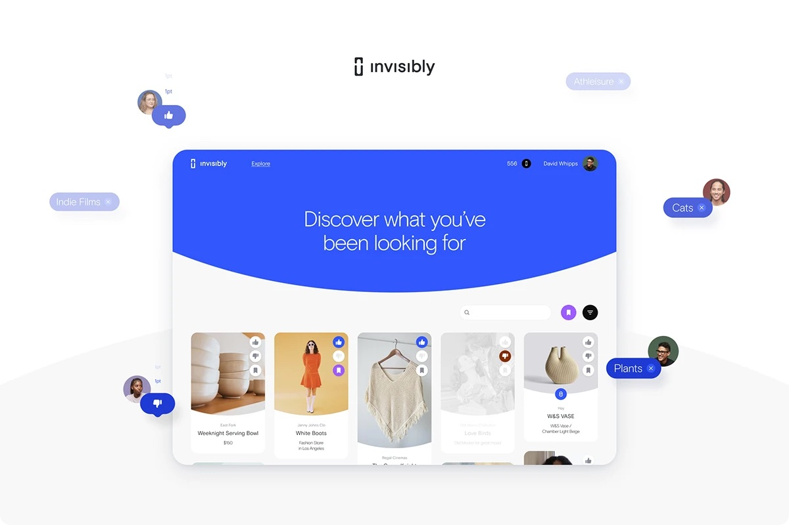
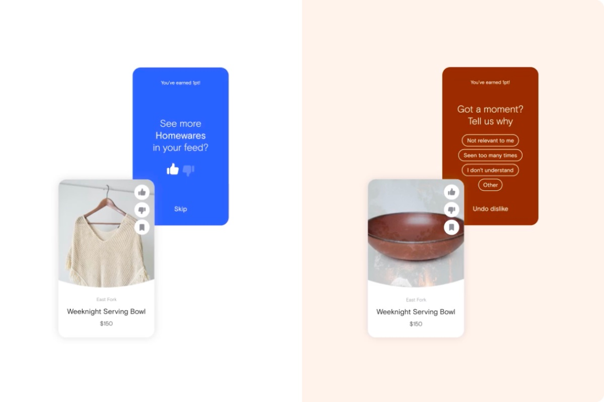
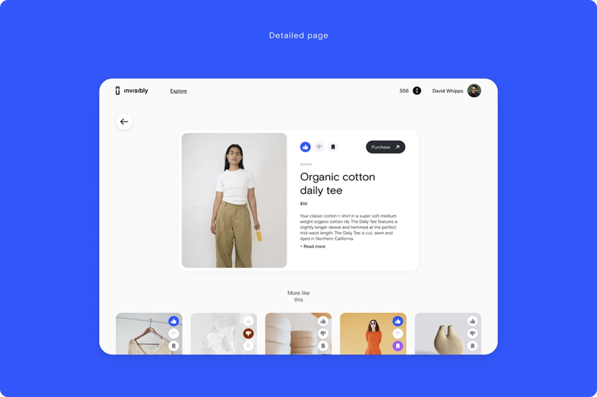
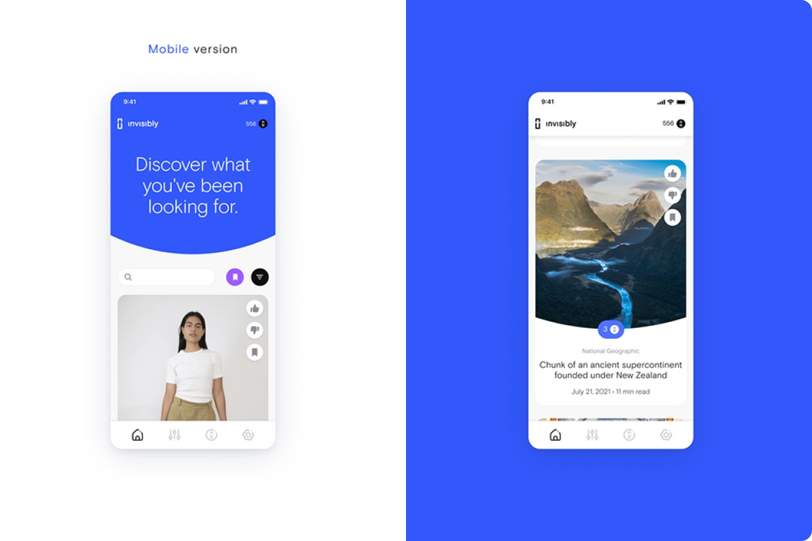
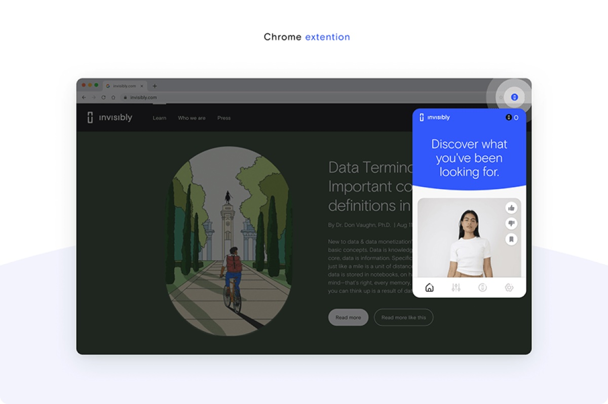
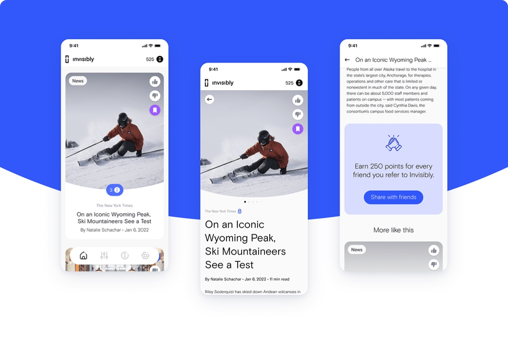
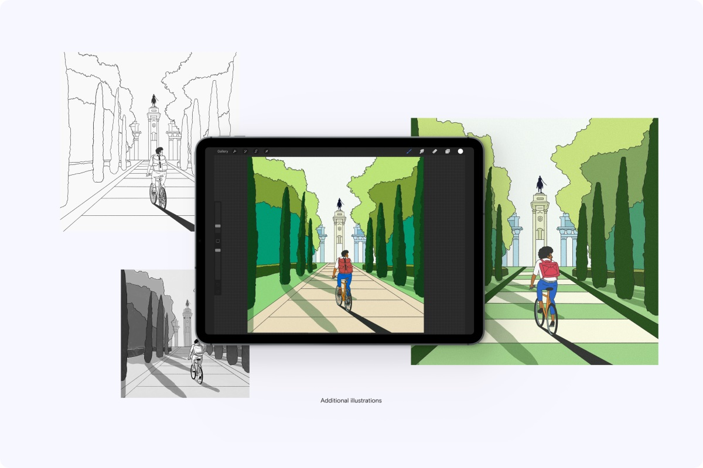
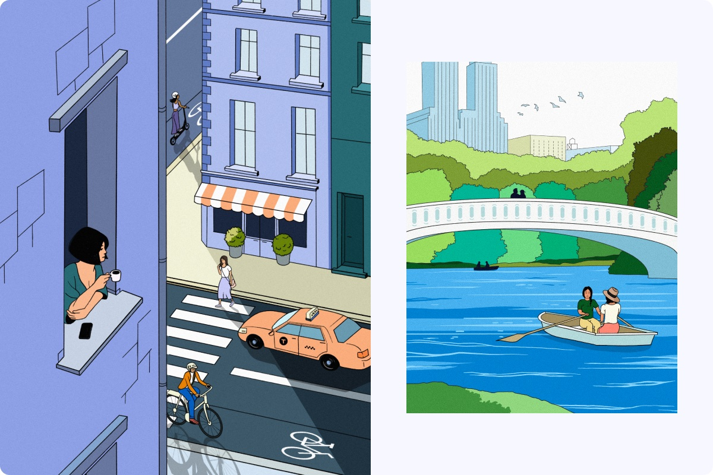
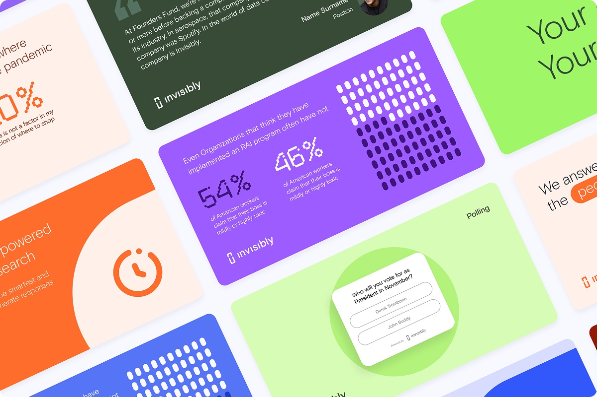
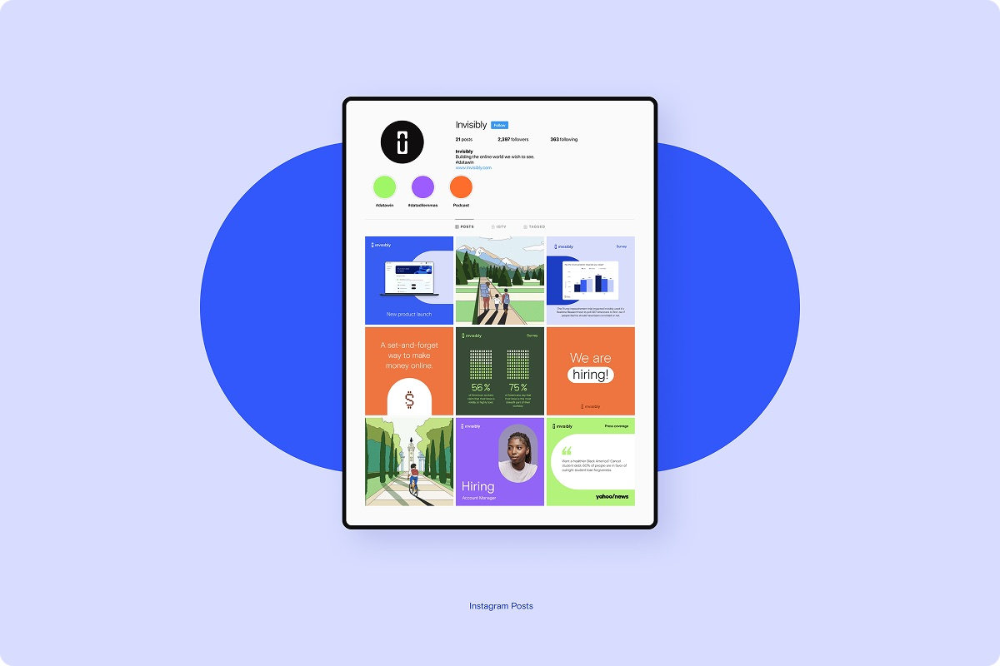

Invisibly
The problem
Most online content sits behind paywalls, ads, or subscriptions. Invisibly offers another way: people share what they like and dislike, and get free access to content in return. Brands get instant insight into their audiences. The UX challenge was to make sharing data feel effortless and worth it, not like filling out a survey.

Like or dislike in one tap
Every card has quick reactions. A like or dislike takes one tap, and an optional short follow-up asks why. Users give useful feedback without leaving the feed.

A feed that learns
Reactions shape a personal feed, so users see right away what they get for sharing their preferences.

Wherever users browse
The mobile app keeps the full web experience on a small screen, and the Chrome extension brings the feed into any site users read.



Illustrations & marketing
I created a lifestyle illustration set used across the website, the app, and marketing, plus social media visuals for the product’s key features.



